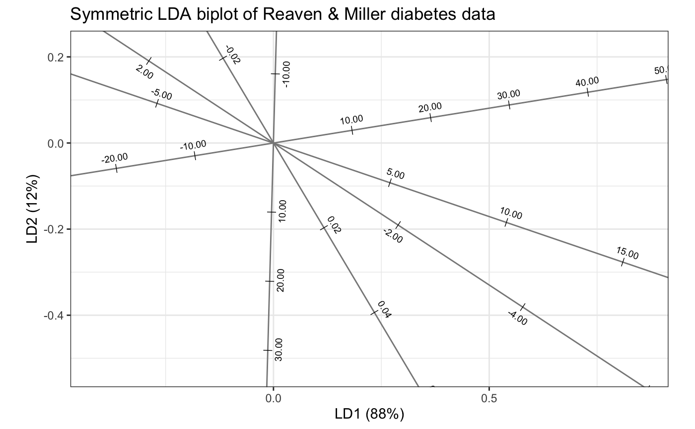
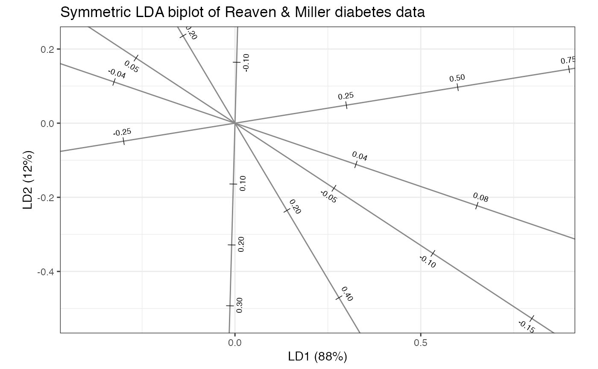
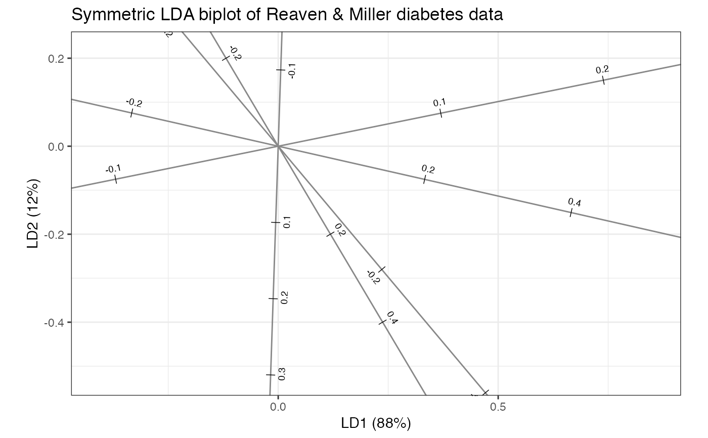

geom-biplot-ticks.Rdgeom_*_axis_text() renders tick mark labels for specified
axes among the row or column factors.
geom_axis_text( mapping = NULL, data = NULL, stat = "identity", position = "identity", axes = NULL, calibrate = FALSE, family_fun = NULL, by = NULL, label_dodge = 0.025, ..., parse = FALSE, check_overlap = FALSE, na.rm = FALSE, show.legend = NA, inherit.aes = TRUE ) geom_rows_axis_text( mapping = NULL, data = NULL, stat = "identity", position = "identity", axes = NULL, calibrate = FALSE, family_fun = NULL, by = NULL, label_dodge = 0.025, ..., parse = FALSE, check_overlap = FALSE, na.rm = FALSE, show.legend = NA, inherit.aes = TRUE ) geom_cols_axis_text( mapping = NULL, data = NULL, stat = "identity", position = "identity", axes = NULL, calibrate = FALSE, family_fun = NULL, by = NULL, label_dodge = 0.025, ..., parse = FALSE, check_overlap = FALSE, na.rm = FALSE, show.legend = NA, inherit.aes = TRUE ) geom_dims_axis_text( mapping = NULL, data = NULL, stat = "identity", position = "identity", .matrix = "cols", axes = NULL, calibrate = FALSE, family_fun = NULL, by = NULL, label_dodge = 0.025, ..., parse = FALSE, check_overlap = FALSE, na.rm = FALSE, show.legend = NA, inherit.aes = TRUE )
| mapping | Set of aesthetic mappings created by |
|---|---|
| data | The data to be displayed in this layer. There are three options: If A A |
| stat | The statistical transformation to use on the data for this layer, as a string. |
| position | Position adjustment, either as a string, or the result of a call to a position adjustment function. |
| axes | Indices of axes for which to render elements. |
| calibrate | Logical; whether to calibrate axis scales for inner product interpretability. |
| family_fun | A family function, or a character string naming one, to transform the values along the axis at which to render elements. |
| by | Interval length between elements, in the units of the ordination. |
| label_dodge | Numeric; the orthogonal distance of the text from the axis, as a proportion of the minimum of the plot width and height. |
| ... | Additional arguments passed to |
| parse | If |
| check_overlap | If |
| na.rm | Passed to |
| show.legend | logical. Should this layer be included in the legends?
|
| inherit.aes | If |
| .matrix | A character string matching one of several indicators for one
or both matrices in a matrix decomposition used for ordination. The
standard values are |
An object of class GeomAxisText (inherits from GeomText, Geom, ggproto, gg) of length 4.
ggbiplot() uses ggplot2::fortify() internally to produce a single data
frame with a .matrix column distinguishing the subjects ("rows") and
variables ("cols"). The stat layers stat_rows() and stat_cols() simply
filter the data frame to one of these two.
The geom layers geom_rows_*() and geom_cols_*() call the corresponding
stat in order to render plot elements for the corresponding factor matrix.
geom_dims_*() selects a default matrix based on common practice, e.g.
points for rows and arrows for columns.
geom_*_axis_text() understands the following aesthetics
(required aesthetics are in bold):
x
y
alpha
angle
colour
family
fontface
hjust
lineheight
size
vjust
group
# LDA biplot scales for Reaven & Miller diabetes data diabetes_custom_biplot <- function(axes.scale) { lda_ord(group ~ ., heplots::Diabetes, axes.scale = axes.scale) %>% as_tbl_ord() %>% augment() %>% print() %T>% mutate_rows(discriminant = ifelse(! .supplement, "centroid", "case")) %>% confer_inertia("symmetric") %>% ggbiplot(.supplement = FALSE) + theme_bw() + geom_rows_point(aes(shape = .grouping)) + geom_cols_axis(color = "#888888") + geom_cols_axis_ticks() + geom_cols_axis_text(size = 2.5, label_dodge = .025) + ggtitle("Symmetric LDA biplot of Reaven & Miller diabetes data") } diabetes_custom_biplot("unstandardized")#> # A tbl_ord of class 'lda_ord': (148 x 2) x (5 x 2)' #> # 2 coordinates: LD1 and LD2 #> # #> # Rows: [ 148 x 2 | 5 ] #> LD1 LD2 | .name .prior .counts .supplement #> | <chr> <dbl> <int> <lgl> #> 1 -1.75 0.400 | 1 Norm… 0.524 76 FALSE #> 2 0.340 -1.38 | 2 Chem… 0.248 36 FALSE #> 3 3.66 0.580 | 3 Over… 0.228 33 FALSE #> 4 -1.72 0.663 | 4 1 NA NA TRUE #> 5 -2.85 1.30 | 5 2 NA NA TRUE #> # … with 143 more rows, and 1 more #> # Rows: [ 148 x 2 | 5 ]# variable: .grouping <fct> #> # #> # Columns: [ 5 x 2 | 1 ] #> LD1 LD2 | .name #> | <chr> #> 1 1.36 -3.78 | 1 relwt #> 2 -0.0336 0.0366 | 2 glufast #> 3 0.0126 -0.00709 | 3 glutest #> 4 -0.000102 -0.00617 | 4 instest #> 5 0.00424 0.00113 | 5 sspg#> Warning: Removed 3 rows containing missing values (geom_point).diabetes_custom_biplot("standardized")#> # A tbl_ord of class 'lda_ord': (148 x 2) x (5 x 2)' #> # 2 coordinates: LD1 and LD2 #> # #> # Rows: [ 148 x 2 | 5 ] #> LD1 LD2 | .name .prior .counts .supplement #> | <chr> <dbl> <int> <lgl> #> 1 -1.75 0.400 | 1 Norm… 0.524 76 FALSE #> 2 0.340 -1.38 | 2 Chem… 0.248 36 FALSE #> 3 3.66 0.580 | 3 Over… 0.228 33 FALSE #> 4 -1.72 0.663 | 4 1 NA NA TRUE #> 5 -2.85 1.30 | 5 2 NA NA TRUE #> # … with 143 more rows, and 1 more #> # Rows: [ 148 x 2 | 5 ]# variable: .grouping <fct> #> # #> # Columns: [ 5 x 2 | 1 ] #> LD1 LD2 | .name #> | <chr> #> 1 0.163 -0.453 | 1 relwt #> 2 -1.24 1.35 | 2 glufast #> 3 1.90 -1.07 | 3 glutest #> 4 -0.0105 -0.631 | 4 instest #> 5 0.279 0.0746 | 5 sspg#> Warning: Removed 3 rows containing missing values (geom_point).diabetes_custom_biplot("contribution")#> # A tbl_ord of class 'lda_ord': (148 x 2) x (5 x 2)' #> # 2 coordinates: LD1 and LD2 #> # #> # Rows: [ 148 x 2 | 5 ] #> LD1 LD2 | .name .prior .counts .supplement #> | <chr> <dbl> <int> <lgl> #> 1 -1.75 0.400 | 1 Norm… 0.524 76 FALSE #> 2 0.340 -1.38 | 2 Chem… 0.248 36 FALSE #> 3 3.66 0.580 | 3 Over… 0.228 33 FALSE #> 4 -1.72 0.663 | 4 1 NA NA TRUE #> 5 -2.85 1.30 | 5 2 NA NA TRUE #> # … with 143 more rows, and 1 more #> # Rows: [ 148 x 2 | 5 ]# variable: .grouping <fct> #> # #> # Columns: [ 5 x 2 | 1 ] #> LD1 LD2 | .name #> | <chr> #> 1 0.138 -0.384 | 1 relwt #> 2 -0.274 0.539 | 2 glufast #> 3 0.861 0.288 | 3 glutest #> 4 -0.0134 -0.666 | 4 instest #> 5 0.388 -0.145 | 5 sspg#> Warning: Removed 3 rows containing missing values (geom_point).